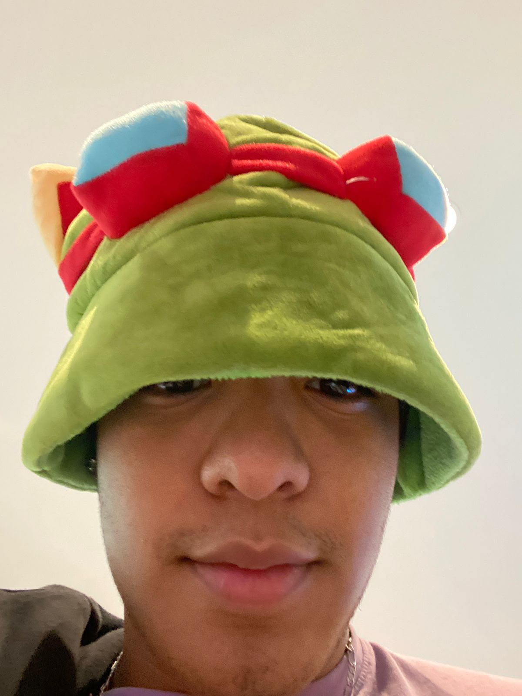

Presentación
Mi nombre es Gustavo Reyes, tengo 20 años y nací el 22 de marzo. Soy egresado del Colegio Anglo Mexicano y actualmente soy estudiante de la Universidad Tecnológica de Panamá, donde estoy cursando la carrera de Licenciatura en Ingeniería de Software.
En la actualidad todavía no tengo muy claro a qué quiero dedicarme o en qué área me gustaría especializarme. Considero que todavía estoy en una etapa en la que puedo conocer diferentes áreas y descubrir cuáles se adaptan mejor a mis intereses.